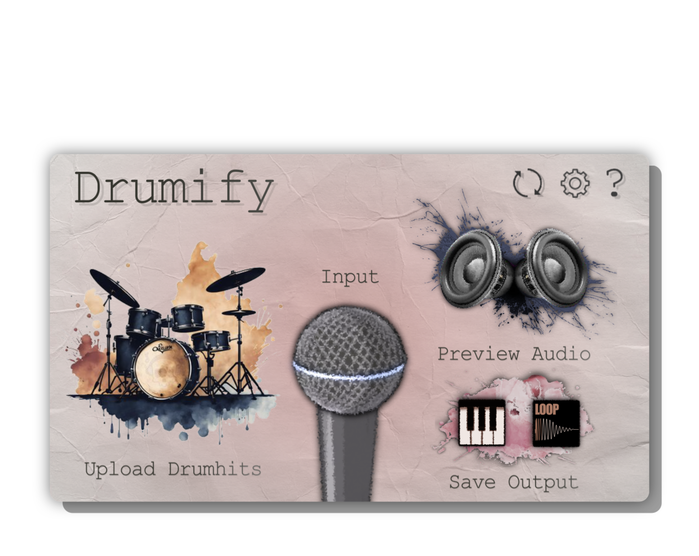

Boom bap
Beatboxed into a laptop mic

No player above? Watch it on YouTube.
You have a beat in your head: it is glorious, it is perfect, and so, you get to work. You draw it into your DAW one hit at a time, or hunt through a sample pack for a loop that nearly fits, but the sounds do not quite match your emotional intent. You probably got somewhere, maybe all of the way there, but it was slower and more tedious than it should have been...
Beatbox it instead! Drumify listens to your input, finds every hit, decides the drum type, and rebuilds the groove with the samples you chose. Your timing, your dynamics, your drums. Want to change the samples of an existing loop instead? Drop in any sample you want and watch it get transformed with your drums.
When it sounds right, drag the result straight into your session as audio or MIDI.
Drumify is free, and its algorithms use no AI. No neural network, no model to download, no account, no stealing your data. It uses deterministic digital signal processing methods, making it light on your CPU and 100% interpretable.
The left column is input audio. The right is the same loop with hits replaced: Same timing, same feel, different drums.
Four stages, all of them 100% explainable and handcrafted. No black boxes here!
A 2048-point short-time Fourier transform feeds a complex-domain detection function. A spiking statistical trigger marks the moment that a transient begins.
Several manually developed features, measuring energy trends, spectral centroid, and more for each input drum.
A Gaussian naive Bayes classifier weighs the features against measured distributions for an ideal kick, snare and hat. Pick the one it matches best!
Your samples are placed at the original onsets, quantised if you want, with unreplaced hits spliced back in and the whole loop normalised.
Classification runs offline, after the take, so the analysis is free to be thorough; detection runs live on the audio thread, allocation-free, while you play.